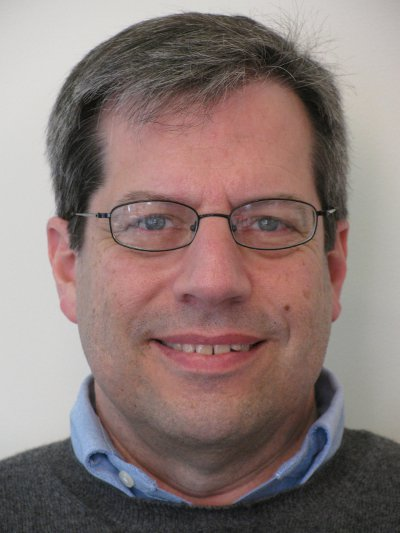

| Eric Grosse |
|

grosse@gmail.com
|
|
biosketch, affiliations, cv, papers
I'm currently
talking
with people interested in NC3 modernization and related topics.
I argue for building an open-source version of the classic Moscow - Washington hotline,
so that national leaders can avoid misunderstandings leading to war:
hotline cryptography.pdf.
I retired as Google's VP Security & Privacy Engineering, after ten wonderful years working with a team of passionate and talented people committed to being good stewards of our users' data. There is a workshop keynote that reflects on some of that experience.
We refused to accept the status quo of crime and espionage
and helped move industry best practices from a "fire code" model of checklists to a "red team" model of testing against adversaries,
focusing on defense, detection, and response:
But life is short and I wanted to spend more of it with Brenda, exploring our country by air in a Cessna 182, N945G. For my public service component, I'll be submitting patches upstream to harden open source systems. Earlier as a Bell Labs Fellow, I worked on algorithms for numerical approximation, simulation, domain decomposition, floating point, visualization, and networked computing and tried to make the netlib collection a useful aid for scientific computing. N2VI is my amateur radio callsign, a unique id assigned by the FCC. |
{kind=link}
{kind=link}
{kind=link}